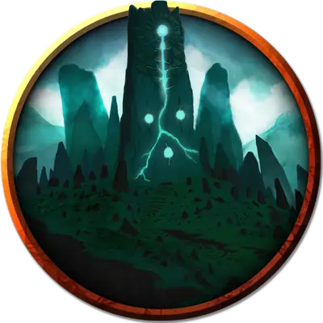

Колыбель холмового отпрыска
Cradle of the Hill Scion
Громадный Элементаль, обычно хаотично-злой

Класс Доспеха 19 (природный доспех)
Хиты 402 (23к20 + 161)
Скорость 40 футов
| мод | спас | ||
|---|---|---|---|
| СИЛ | 25 | +7 | +7 |
| ЛОВ | 10 | +0 | +0 |
| ТЕЛ | 24 | +7 | +7 |
| мод | спас | ||
|---|---|---|---|
| ИНТ | 9 | −1 | −1 |
| МДР | 16 | +3 | +10 |
| ХАР | 10 | +0 | +7 |
Сопротивление урону огонь, холод, электричество; дробящий, колющий, рубящий от немагических атак
Иммунитет к урону яд
Иммунитет к состояниям истощение, окаменение, отравление, паралич, сбивание с ног
Чувства пассивное Восприятие 13
Языки Великаний, Первичный
Опасность 22 (41000 опыта)
Бонус мастерства +7
Особенности
Пробуждение отпрыска. Колыбель - это сосуд отпрыска Гролантора [scion of Grolantor]. Когда хиты колыбели уменьшаются до 0, её остов рассыпается в грязь и мох. Отпрыск мгновенно появляется в том пространстве, которое занимала колыбель, и использует инициативу колыбели.
Легендарное сопротивление (5/день). Если колыбель проваливает спасбросок, она может вместо этого сделать спасбросок успешным.
Сопротивление магии. Колыбель совершает с преимуществом спасброски от заклинаний и прочих магических эффектов.
Осадный монстр. Колыбель наносит двойной урон объектам и сооружениям.
Действия
Мультиатака. Колыбель совершает три атаки Размашистым ударом или Плевком камнем, в любой комбинации и одну атаку Цепким корнем.
Размашистый удар. . Рукопашная атака оружием: + 14 к попаданию, досягаемость 20 футов, одна цель. Попадание: 33 (4к12 + 7) дробящего урона.
Плевок камнем. . Дальнобойная атака оружием: +14 к попаданию, дистанция 120 футов, одна цель. Попадание: 25 (4к8 + 7) дробящего урона, и цель должна преуспеть в спасброске Силы Сл 22, иначе упадёт ничком.
Цепкий корень. . Рукопашная атака оружием: +14 к попаданию, досягаемость 30 футов, одно существо не схваченное колыбелью. Попадание: цель становится схваченной (Сл высвобождения17). Пока захват не закончится, цель получает 29 (4к10 + 7) дробящего урона в начале каждого своего хода. Корень имеет КД 19, и его можно отсечь, нанеся ему 15 или более рубящего урона за одну атаку. Отсечение корня не вредит колыбели, но окончит захват.
Холмистая местность (перезарядка 6). Колыбель волшебным образом создает волну грязи, распространяющаяся из точки на земле, находящейся в пределах 120 футов от себя. Волна достигает 30 футов в длину, до 30 футов в высоту и до 30 футов в ширину. Каждое существо оказавшееся в волне должно совершить спасбросок Силы Сл 22. В случае провала существо получает 58 (9к12) дробящего урона, падает ничком и становится погребенным под грязью. В случае успеха существо получает только половину этого урона.
Погребенное существо опутано, имеет полное укрытые и не может дышать. Действием существо, погребённое таким образом или другое существо находящееся в 5 футов от него, которое не погребено, может совершить проверку Силы (Атлетика) Сл 17. В случае успеха погребенное существо перестаёт быть опутанным и сбитым с ног.
Описание
Дремлющего отпрыска Гролантора часто принимают за холм, и иногда люди возводят стоячие камни, деревню или город на спине отпрыска, не подозревая о могучей силе, скрывающейся под ними. Такие поселения могут процветать веками, поскольку магия отпрыска способствует процветанию сельскохозяйственных культур и домашнего скота в окружающем регионе. Древнее дерево возвышается на гребне холма.
При пробуждении "колыбель холмового отпрыска" поднимается в виде массы грязи, камня и корней с двумя массивными ветвями. Колыбель использует корни деревьев и волны грязи, чтобы сковать и похоронить врагов.
Если колыбель разрушена, отпрыск Гролантора внутри нее пробуждается. Достигая 50 футов в высоту, отпрыск пожирает все, что находится в пределах досягаемости, чтобы утолить свой голод. Его мощные легкие могут всасывать пищу прямо в пищевод. Отпрыск использует огромное дерево, чтобы отбрасывать врагов на далёкие расстояния.